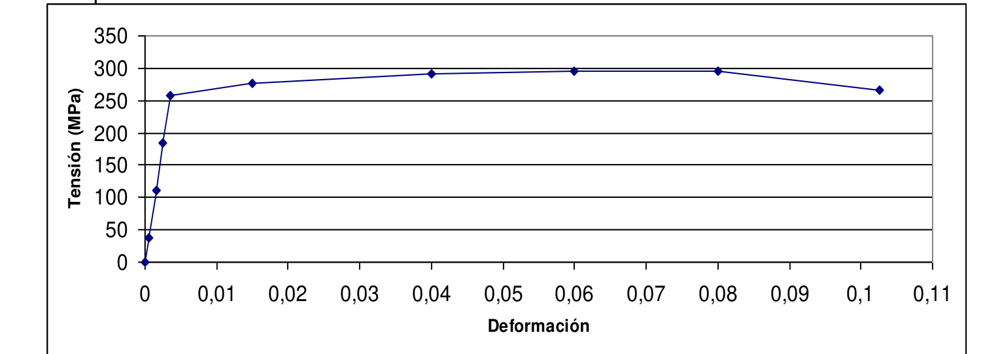

Topic 5: Solved Problems
Step-by-step solutions of all 15 problems of the official sheet on mechanical properties (Problems T5_MechanicalProperties: the tensile test, the elastic modulus, yield and tensile strength, ductility, resilience, true stress and strain, thermal stress and hardness, from Sessions 11 and 12), written in four phases. The sheet has no worked solutions, only a numeric key for most items, so every solution is derived here and compared with that key.
Problem 1
Problems T5_MechanicalProperties.pdf #1
Tensile test · full stress-strain analysis
Click to Collapse ▲
Complete Analysis of a Tensile Test from the Load-Elongation Table
Original statement · Problems T5_MechanicalProperties.pdf
- A cylindrical aluminum sample has a diameter of 12.8 mm and an initial base length of 12.5 mm and it is subjected to uniaxial tension. Use the data from the load/elongation table to answer the following questions:
- a. Represent the engineering stress data versus the engineering strain.
- b. Calculate Young's modulus.
- c. Calculate the yield strength, assuming that the residual strain at the yield point is 0.002.
- d. Work out the tensile strength of this alloy.
- e. Determine the approximate value of ductility expressed as a deformation percentage.
- f. Determine the approximate value of the modulus of resilience.
- g. Calculate the load (N) and the elongation (mm) of the sample at the yield point.
- h. Calculate an approximate working stress for this material.
- i. With the values obtained, is it possible to calculate the load applied to the sample if the elongation produced is 0.1 mm? If it is possible, work it out and if it is not possible, explain your answer and provide an alternative method.
| Point | F (N/100) | ΔL (mm) |
|---|---|---|
| 1 | 127 | 0.006 |
| 2 | 254 | 0.012 |
| 3 | 381 | 0.019 |
| 4 | 508 | 0.025 |
| 5 | 762 | 0.038 |
| 6 | 891 | 0.051 |
| 7 | 927 | 0.063 |
| 8 | 1025 | 0.095 |
| 9 | 1078 | 0.127 |
| 10 | 1194 | 0.190 |
| 11 | 1283 | 0.254 |
| 12 | 1497 | 0.508 |
| 13 | 1590 | 0.762 |
| 14 | 1604 | 0.889 |
| 15 | 1595 | 1.016 |
| 16 | 1515 | 1.270 |
| 17 | 1247 | 1.460 |
(The sheet prints the table in two rows, F and ΔL, followed by the word "Fracture"; here each point has its own row. Point 17 is the last record before the fracture.)
Hypotheses
- Uniaxial, uniform stress. The load acts along the axis of the cylinder, and up to the necking the stress is the same on every cross-section of the gauge length. Under this hypothesis the engineering stress and strain are defined with the original area and length [Session 11 Slide 9].
- Linear elastic start. For small loads the curve is a straight line through the origin, Hooke's law $\sigma = E\varepsilon$, and the slope of that line is the Young's modulus [Session 11 Slide 13].
- Conventional yield strength. The yield strength is the stress at which the curve crosses the line drawn parallel to the elastic line from the residual strain $0.002$ (0.2 % offset), as the statement asks [Session 11 Slide 28].
- Between table rows the curve is a straight segment. The table gives discrete points, so every reading between two of them is a linear interpolation.
- Elastic recovery. When the sample breaks the load disappears and the elastic strain is recovered, so the ductility is the plastic strain at fracture [Session 11 Slide 32].
- Safety factor. The statement gives none; the slide says that $N$ is usually 2, and that value is used for the working stress [Session 11 Slide 29].
Data
| Quantity | Symbol | Value | In SI |
|---|---|---|---|
| Diameter | $d_0$ | 12.8 mm | $12.8\times10^{-3}$ m |
| Initial gauge length | $l_0$ | 12.5 mm | $12.5\times10^{-3}$ m |
| Load (table) | $F$ | $100 \times (F/100)$ | N |
| Elongation (table) | $\Delta L$ | see table | mm |
| Safety factor | $N$ | 2 |
Unknowns: the curve (a), $E$ (b), $\sigma_y$ (c), $\sigma_{max}$ (d), the ductility (e), $U_r$ (f), $F_y$ and $\Delta l_y$ (g), $\sigma_w$ (h), and the load at $\Delta L = 0.1$ mm (i).
There is a single direction, the axis of the sample, and the stress state is uniaxial, so no change of basis and no rotation matrix are involved.
Strategy. Every item comes from the same table of engineering stress and strain, so the first thing to do is to build it:
- The Young's modulus is the slope of the straight initial part (Hooke's law). A straight line through the origin is fitted by least squares: it minimises $\sum(\sigma_i - E\varepsilon_i)^2$, which gives $E = \sum\sigma_i\varepsilon_i / \sum\varepsilon_i^2$.
- The yield strength is found by the 0.2 % offset construction, solved algebraically on the segment of the table where the curve crosses the offset line.
- The tensile strength is the maximum nominal stress, and since $A_0$ is constant it corresponds to the maximum load.
- The ductility is the plastic strain at fracture, and the modulus of resilience is the area under the elastic line up to the yield point, $U_r = \sigma_y^2/(2E)$ [Session 11 Slide 35].
- For the load at a given elongation the table is used again: Hooke's law only holds in the elastic zone.
1. Cross-section
The square is $12.8^2 = 163.84$, then $\pi \times 163.84 = 514.72$ and dividing by 4:
2. Engineering stress and strain of every point
The load of the table is in hundreds of newtons, so $F = 100\times(F/100)$. For point 1:
The same operation for all the points (the last column is the secant modulus, used in item b):
| Point | $F$ (N) | $\Delta L$ (mm) | $\sigma_n$ (MPa) | $\varepsilon_n$ | $\sigma_n/\varepsilon_n$ (GPa) |
|---|---|---|---|---|---|
| 1 | 12 700 | 0.006 | 98.69 | 0.00048 | 205.6 |
| 2 | 25 400 | 0.012 | 197.39 | 0.00096 | 205.6 |
| 3 | 38 100 | 0.019 | 296.08 | 0.00152 | 194.8 |
| 4 | 50 800 | 0.025 | 394.78 | 0.00200 | 197.4 |
| 5 | 76 200 | 0.038 | 592.17 | 0.00304 | 194.8 |
| 6 | 89 100 | 0.051 | 692.42 | 0.00408 | 169.7 |
| 7 | 92 700 | 0.063 | 720.39 | 0.00504 | 142.9 |
| 8 | 102 500 | 0.095 | 796.55 | 0.00760 | 104.8 |
| 9 | 107 800 | 0.127 | 837.74 | 0.01016 | 82.5 |
| 10 | 119 400 | 0.190 | 927.89 | 0.01520 | 61.0 |
| 11 | 128 300 | 0.254 | 997.05 | 0.02032 | 49.1 |
| 12 | 149 700 | 0.508 | 1163.35 | 0.04064 | 28.6 |
| 13 | 159 000 | 0.762 | 1235.63 | 0.06096 | 20.3 |
| 14 | 160 400 | 0.889 | 1246.51 | 0.07112 | 17.5 |
| 15 | 159 500 | 1.016 | 1239.51 | 0.08128 | 15.2 |
| 16 | 151 500 | 1.270 | 1177.34 | 0.10160 | 11.6 |
| 17 | 124 700 | 1.460 | 969.07 | 0.11680 | 8.3 |
a) Stress-strain curve
The points of the table are plotted as they are, joined by straight segments. The right-hand panel enlarges the elastic part, where the Young's modulus line and the offset line of item c are drawn.
b) Young's modulus
The secant modulus $\sigma_n/\varepsilon_n$ of the last column is almost constant, 195 to 206 GPa, for points 1 to 5, and it drops to 170 GPa at point 6 and to 143 GPa at point 7: the specimen leaves the linear zone after point 5. The straight part is therefore made of points 1 to 5, and the fit through the origin is:
| Point | $\varepsilon_i$ | $\sigma_i$ (MPa) | $\sigma_i\varepsilon_i$ (MPa) | $\varepsilon_i^2$ |
|---|---|---|---|---|
| 1 | 0.00048 | 98.69 | 0.0474 | $2.304\times 10^{-7}$ |
| 2 | 0.00096 | 197.39 | 0.1895 | $9.216\times 10^{-7}$ |
| 3 | 0.00152 | 296.08 | 0.4500 | $2.310\times 10^{-6}$ |
| 4 | 0.00200 | 394.78 | 0.7896 | $4.000\times 10^{-6}$ |
| 5 | 0.00304 | 592.17 | 1.8002 | $9.242\times 10^{-6}$ |
c) Yield strength (0.2 % offset)
The offset line starts at $\varepsilon = 0.002$ and is parallel to the elastic line:
The curve is above the line while $g = \sigma_n - E(\varepsilon_n - 0.002)$ is positive. The sign of $g$ changes between points 7 and 8, so the crossing is on that segment:
| Point | $\varepsilon_n$ | $\sigma_n$ (MPa) | $E(\varepsilon_n - 0.002)$ (MPa) | $g = \sigma_n - E(\varepsilon_n - 0.002)$ (MPa) |
|---|---|---|---|---|
| 6 | 0.00408 | 692.4 | 408.0 | 284.4 |
| 7 | 0.00504 | 720.4 | 596.3 | 124.1 |
| 8 | 0.00760 | 796.6 | 1098.5 | -301.9 |
| 9 | 0.01016 | 837.7 | 1600.7 | -762.9 |
The segment between the two points is the line
Equating it to the offset line, $\sigma_{7} + m(\varepsilon - \varepsilon_{7}) = E(\varepsilon - 0.002)$, and solving for $\varepsilon$:
d) Tensile strength
The maximum load of the table is $F_{max} = 160\,400$ N at point 14. The nominal stress uses the original area, so the maximum load gives the maximum stress:
e) Ductility
The last record before the fracture is point 17: $\Delta L = 1.460$ mm and $F = 124\,700$ N, so
At that moment the strain is the sum of an elastic and a plastic part, $\varepsilon_t = \varepsilon_e + \varepsilon_p$. After the fracture the load is zero and the elastic part is recovered along a line parallel to the elastic one, so what remains is $\varepsilon_p$ [Session 11 Slide 32]:
f) Modulus of resilience
The area under the elastic line up to the yield point is a triangle, $U_r = \tfrac12\sigma_y\varepsilon_{y}$ with $\varepsilon_{y} = \sigma_y/E$ [Session 11 Slide 35]:
($1\ \text{MPa} = 1\ \text{MJ/m}^3$.)
g) Load and elongation at the yield point
The load is the yield stress times the original area, and the elongation is the total strain of the yield point (the value $\varepsilon^*$ of item c) times the original length:
h) Working stress
i) Load for an elongation of 0.1 mm
The elongation of the yield point is 0.0723 mm, so $0.1$ mm is in the plastic zone and the load is not proportional to the elongation. Using Hooke's law anyway, $F = E A_0\Delta l/l_0$, would give
which is larger than the maximum load that the sample supports, 160 400 N: the answer is not possible with the values obtained. The alternative is the table itself. The elongation 0.1 mm is between points 8 ($\Delta L = 0.095$ mm, $F = 102\,500$ N) and 9 ($\Delta L = 0.127$ mm, $F = 107\,800$ N), and a linear interpolation on that segment gives
Checks
- Units. $\sigma_n = F/A_0$ in N/mm² is MPa, $\varepsilon_n$ is a ratio of lengths and has no units, so $E = \sigma/\varepsilon$ is in MPa and $U_r = \sigma_y^2/2E$ is in MPa (energy per unit volume).
- Order. $\sigma_y = 742.6$ MPa $< \sigma_{max} = 1246.5$ MPa, and the fracture stress ($969.1$ MPa) is below the maximum, as in a ductile sample that necks.
- The fit. The secant moduli of points 1 to 5 are within 4.8 % of the fitted $E$, and the offset line crosses the curve between points 7 and 8, inside the segment used.
- Item i. The interpolated load, 103.3 kN, is between the loads of the two rows and below the maximum load; the Hooke value, 202 kN, is not.
Interpretation
The sample is stiff ($E \approx 196$ GPa) and strong, and it yields at about 742.6 MPa, a strain of 0.579 %. From there to the maximum load the strain hardening raises the stress by 504 MPa, and the 11.2 % of plastic elongation at fracture shows that it is also ductile.
The table of Session 11 gives $E = 69$ GPa for aluminium and 207 GPa for steel [Session 11 Slide 17]. The data of this problem give $E \approx 196$ GPa and a yield strength above 700 MPa, which are the values of a steel, not of aluminium. The statement says "aluminum"; the data are used as they are.
Check against the official solution
The key printed on the sheet is compared with the values computed here:
| Item | Official | Computed | Comment |
|---|---|---|---|
| b. $E$ | $\approx 200$ GPa | 196.2 GPa | agrees (2 %) |
| c. $\sigma_y$ | 740 MPa | 742.6 MPa | agrees |
| d. $\sigma_{max}$ | 1250 MPa | 1246.5 MPa | agrees (rounded) |
| e. ductility | 11.3 % | 11.2 % | agrees within the reading |
| f. $U_r$ | 1.37 MPa | 1.41 MPa | agrees (2.5 %); the key uses $E = 200$ GPa and $\sigma_y = 740$ MPa |
| g. $F_y$, $\Delta l_y$ | $9.5\times10^4$ N, 0.071 mm | 95 554 N, 0.0723 mm | agrees |
| h. $\sigma_w$ | 370 MPa | 371.3 MPa | agrees |
| i. load at 0.1 mm | $10.3\times10^4$ N, graphically | 103\,328 N | agrees |
The text of the PDF prints the first load of the table as "1127", but the figure of the sheet shows "127". With 127 the first point gives $\sigma/\varepsilon = 206$ GPa, in line with the rest of the elastic points and with the key, so 127 (12 700 N) is used.
Problem 2
Problems T5_MechanicalProperties.pdf #2
Tensile test · true stress · area reduction
Click to Collapse ▲
Tensile Test of a 15 mm Cylinder: Strength, Resilience, True Stress and Area Reduction
Original statement · Problems T5_MechanicalProperties.pdf
- A cylindrical sample made from a metallic material (assume a Poisson ratio of ν = 0.25) of 15 mm in diameter and a calibrated length of 50 mm was subjected to a tensile test, and the results are shown in the table below:
| Point | Force (kN) | ΔL (mm) |
|---|---|---|
| 1 | 70 | 0.25 |
| 2 | 120 | 0.40 |
| 3 | 150 | 0.50 |
| 4 | 160 | 0.60 |
| 5 | 170 | 0.75 |
| 6 | 200 | 1.75 |
| 7 | 220 | 3.00 |
| 8 | 233 | 5.00 |
| 9 | 233 | 6.50 |
| 10 | 220 | 8.00 |
The diameter of the sample after fracture was 12.45 mm. Calculate:
- a. The tensile strength.
- b. The Young's Modulus (or elastic modulus).
- c. The yield stress.
- d. The modulus of resilience.
- e. The real tension for an engineering deformation of 0.02.
- f. The percentage of deformation to fracture and percentage of area reduction.
(The sheet prints the table in two rows; here each point has its own row.)
Hypotheses
- Uniaxial, uniform stress. Up to the necking the stress is uniform along the gauge length, so the engineering quantities use the original area and length [Session 11 Slide 9].
- Linear elastic start. Hooke's law $\sigma = E\varepsilon$ holds on the first points of the curve [Session 11 Slide 13].
- Yield strength by the 0.2 % offset. The statement does not name a criterion; the conventional one for metals is the 0.2 % offset [Session 11 Slide 28].
- Straight segments between table rows, so readings between two rows are linear interpolations.
- Uniform deformation before the necking. The volume is constant, $A\,l = A_0 l_0$, until the maximum load, where the necking starts [Session 11 Slides 30 and 38]. The true stress of item e is computed in that range.
- Elastic recovery after the fracture. The elastic strain disappears when the load does, and what is left is the plastic strain [Session 11 Slide 32]. The reduction of area uses the measured final diameter [Session 11 Slide 33].
- The Poisson ratio is not needed. $\nu = 0.25$ is a datum of the statement, but none of the six items uses it: the only lateral information is the final diameter, which is measured.
Data
| Quantity | Symbol | Value | In SI |
|---|---|---|---|
| Diameter | $d_0$ | 15 mm | $15\times10^{-3}$ m |
| Gauge length | $l_0$ | 50 mm | $50\times10^{-3}$ m |
| Diameter after fracture | $d_f$ | 12.45 mm | $12.45\times10^{-3}$ m |
| Poisson ratio (not used) | $\nu$ | 0.25 | |
| Load, elongation | $F$, $\Delta L$ | table | kN, mm |
Unknowns: $\sigma_{UTS}$ (a), $E$ (b), $\sigma_y$ (c), $U_r$ (d), $\sigma_r$ at $\varepsilon_n = 0.02$ (e), the elongation at fracture and the reduction of area (f).
The only direction is the axis of the cylinder and the stress is uniaxial, so there is no change of basis.
Strategy. As in any tensile test, the first step is to turn the table into engineering stress and strain,
and then read each item from it: the maximum stress (a), the slope of the straight part by least squares through the origin (b), the offset construction solved on the crossing segment (c), $U_r = \sigma_y^2/2E$ (d) [Session 11 Slide 35].
True stress (e). With constant volume, $A\,l = A_0 l_0$, so $A = A_0 l_0/l = A_0/(1 + \varepsilon_n)$. The true stress is then
which is the relation of the slide for the uniform deformation [Session 11 Slide 38].
1. Cross-section
The square is $15^2 = 225$, then $\pi\times225 = 706.86$ and dividing by 4:
2. Engineering stress and strain of every point
The loads are in kN, so $F = 1000\times F_{kN}$ newtons. For example, point 1 is $F = 70\,000$ N and $\Delta L = 0.25$ mm, so $\sigma_n = 70\,000/176.71 = 396.1$ MPa and $\varepsilon_n = 0.25/50 = 0.0050$. All the points:
| Point | $F$ (N) | $\Delta L$ (mm) | $\sigma_n$ (MPa) | $\varepsilon_n$ | $\sigma_n/\varepsilon_n$ (GPa) |
|---|---|---|---|---|---|
| 1 | 70 000 | 0.25 | 396.1 | 0.0050 | 79.2 |
| 2 | 120 000 | 0.40 | 679.1 | 0.0080 | 84.9 |
| 3 | 150 000 | 0.50 | 848.8 | 0.0100 | 84.9 |
| 4 | 160 000 | 0.60 | 905.4 | 0.0120 | 75.5 |
| 5 | 170 000 | 0.75 | 962.0 | 0.0150 | 64.1 |
| 6 | 200 000 | 1.75 | 1131.8 | 0.0350 | 32.3 |
| 7 | 220 000 | 3.00 | 1244.9 | 0.0600 | 20.7 |
| 8 | 233 000 | 5.00 | 1318.5 | 0.1000 | 13.2 |
| 9 | 233 000 | 6.50 | 1318.5 | 0.1300 | 10.1 |
| 10 | 220 000 | 8.00 | 1244.9 | 0.1600 | 7.8 |
a) Tensile strength
The maximum load is $F_{max} = 233\,000$ N, reached at points 8 and 9 ($\varepsilon_n = 0.100$ and $0.130$: the load stays at its maximum while the sample elongates). The area $A_0$ is constant in the engineering stress, so
b) Young's modulus
The secant modulus is 79 to 85 GPa for points 1 to 3, and it drops to 75 GPa at point 4 and to 64 GPa at point 5: the linear zone ends after point 3. The fit through the origin with points 1 to 3 is:
| Point | $\varepsilon_i$ | $\sigma_i$ (MPa) | $\sigma_i\varepsilon_i$ (MPa) | $\varepsilon_i^2$ |
|---|---|---|---|---|
| 1 | 0.0050 | 396.1 | 1.9806 | $2.500\times 10^{-5}$ |
| 2 | 0.0080 | 679.1 | 5.4325 | $6.400\times 10^{-5}$ |
| 3 | 0.0100 | 848.8 | 8.4883 | $1.000\times 10^{-4}$ |
c) Yield stress (0.2 % offset)
The offset line is $\sigma_{off} = E(\varepsilon - 0.002)$ and the sign of $g = \sigma_n - E(\varepsilon_n - 0.002)$ tells where the curve crosses it. The sign changes between points 4 and 5:
| Point | $\varepsilon_n$ | $\sigma_n$ (MPa) | $E(\varepsilon_n - 0.002)$ (MPa) | $g = \sigma_n - E(\varepsilon_n - 0.002)$ (MPa) |
|---|---|---|---|---|
| 3 | 0.01000 | 848.8 | 673.1 | 175.8 |
| 4 | 0.01200 | 905.4 | 841.3 | 64.1 |
| 5 | 0.01500 | 962.0 | 1093.7 | -131.7 |
| 6 | 0.03500 | 1131.8 | 2776.4 | -1644.7 |
On that segment
d) Modulus of resilience
($1\ \text{MPa} = 1\ \text{MJ/m}^3$.)
e) True stress for $\varepsilon_n = 0.02$
The elongation that corresponds to $\varepsilon_n = 0.02$ is $\Delta L = 0.02\times50 = 1.00$ mm, which is not a row of the table. It is between points 5 ($\Delta L = 0.75$ mm, $F = 170$ kN) and 6 ($\Delta L = 1.75$ mm, $F = 200$ kN):
This strain is below the one of the maximum load ($\varepsilon_n = 0.100$), so the deformation is still uniform and the relation of Phase 2 applies:
f) Elongation at fracture and reduction of area
The last row of the table is the fracture: $\Delta L = 8.00$ mm and $F = 220\,000$ N, so
The elastic part of that strain is recovered when the sample breaks, $\varepsilon_e = \sigma_f/E$, and what is left is the plastic strain [Session 11 Slide 32]:
For the reduction of area, the final area from the final diameter is
Checks
- Units. Stresses in N/mm² = MPa, strains without units, $E$ and $U_r$ in MPa.
- Order. $\sigma_y = 923.9$ MPa $<\sigma_{UTS} = 1318.5$ MPa, and the stress rises 395 MPa between the yield and the maximum load.
- True and engineering stress. The true stress of item e, 1024.5 MPa, is 2 % above the engineering one, 1004.4 MPa, as the factor $1 + \varepsilon_n$ says.
- Elongation against area reduction. $RA = 31.1$ % is larger than $EL = 14.5$ %, as expected when a ductile sample necks: the section shrinks much more at the neck than the length grows over the whole gauge length.
- Neck. The stress that acts on the neck at the fracture is $F_f/A_f = 220\,000\ \text{N}/121.74\ \text{mm}^2 = 1807$ MPa, far above the engineering fracture stress of 1244.9 MPa because the area is much smaller than $A_0$.
Interpretation
The sample reaches 1.3 GPa with a plateau of maximum load, and it fails after a clear neck. The measured final diameter, not Poisson's ratio, gives the lateral information: Poisson's ratio only describes the elastic part of the deformation.
Check against the official solution
| Item | Official | Computed | Comment |
|---|---|---|---|
| a. $\sigma_{UTS}$ | 1319 MPa | 1318.5 MPa | agrees |
| b. $E$ | 85 GPa | 84.1 GPa | agrees (1 %); the key corresponds to the slope between points 2 and 3 |
| c. $\sigma_y$ | 920 MPa | 923.9 MPa | agrees (0.5 %) |
| d. $U_r$ | 4.98 MPa | 5.07 MPa | agrees (2 %); the key uses $E = 85$ GPa and $\sigma_y = 920$ MPa |
| e. $\sigma_r$ | 1030 MPa | 1024.5 MPa | agrees (0.5 %): the key reads $\sigma_n \approx 1010$ MPa at $\varepsilon_n = 0.02$ |
| f. elongation | 15 % | 14.5 % | agrees (rounded) |
| f. area reduction | 7.3 % | 31.1 % | does not agree |
The official 7.3 % cannot be reproduced from the data of the statement. With $d_0 = 15$ mm and $d_f = 12.45$ mm the final area is $A_f = 121.74$ mm² and the reduction is $31.1$ %. A reduction of 7.3 % would need a final area of $0.927\,A_0$, that is, a final diameter of $15\sqrt{0.927} = 14.44$ mm. The computed value is kept.
Problem 3
Problems T5_MechanicalProperties.pdf #3
Tensile test · true stress and strain · design
Click to Collapse ▲
Tensile Test of a 13 mm Sample: Modulus, Cable Section and True Values at Maximum Load and Fracture
Original statement · Problems T5_MechanicalProperties.pdf, p. 2
- An uniaxial tensile test was performed on a cylindrical sample of 13 mm in diameter getting the results of load and elongation shown in the table below:
- a. Calculate the engineering stress and strain values and draw the stress-strain curve.
- b. Calculate the value of the elastic modulus (Young's Modulus) and determine the length of a bar of 13 cm on which a tension of 200 MPa is applied.
- c. What is the recommended cross-section for a cable that has to support an elevator with a maximum weight of 450 kg?
- d. Calculate the real stress and real strain values at maximum load and at the fracture point, assuming that the diameter of the sample is 12.922 mm and 10.348 mm respectively. Do the calculations without using the engineering stress and strain values.
- e. Calculate the modulus of resilience.
- f. Calculate the elastic strain at the moment before fracture.
| Point | Load (kg) | Calibrated length (mm) | Engineering stress (MPa) | Engineering strain |
|---|---|---|---|---|
| 0 | 0 | 5.148 | ||
| 1 | 500 | 5.151 | ||
| 2 | 1500 | 5.156 | ||
| 3 | 2500 | 5.161 | ||
| 4 | 3500 | 5.166 | ||
| 5 | 3750 | 5.225 | ||
| 6 | 3950 | 5.354 | ||
| 7 | 4000 | 5.457 | ||
| 8 | 4000 | 5.560 | ||
| 9 | 3600 | 5.676 |
(In the sheet the table has only the first two columns filled; the last two are left blank to be completed in item a. Point 0 is the unloaded sample, points 7 and 8 have the same, maximum, load, and point 9 is the fracture.)
Hypotheses
- Uniaxial, uniform stress up to the necking: engineering stress and strain with the original area and length [Session 11 Slide 9].
- Weight to force. The loads are masses in kilograms; the force is $F = m\,g$ with $g = 9.81$ m/s².
- Linear elastic start [Session 11 Slide 13] and 0.2 % offset yield strength [Session 11 Slide 28].
- Calibrated length. The first row ($m = 0$) gives the initial length $l_0 = 5.148$ mm and the other rows the current length. The strain is a ratio, so only the proportion matters.
- True quantities from the measured diameters (item d). The true strain is $\varepsilon_r = \ln(A_0/A) = 2\ln(D_0/D)$ and the true stress is $\sigma_r = F/A$ with $A$ the instantaneous area [Session 11 Slide 38]. They are valid also after the necking, because they use the actual area at the neck.
- Design stress (item c). The statement does not give a safety factor. The minimum section is the one for which the cable does not yield, $\sigma = F/A_0 \leq \sigma_y$; with the usual factor $N = 2$ it would be larger [Session 11 Slide 29].
Data
| Quantity | Symbol | Value | In SI |
|---|---|---|---|
| Diameter | $d_0$ | 13 mm | $13\times10^{-3}$ m |
| Initial calibrated length | $l_0$ | 5.148 mm | $5.148\times10^{-3}$ m |
| Gravity | $g$ | 9.81 m/s² | |
| Bar of item b: length, stress | $l_b$, $\sigma$ | 13 cm, 200 MPa | 0.13 m, $200\times10^6$ Pa |
| Elevator (item c) | $m$ | 450 kg | |
| Diameter at maximum load, at fracture | $D_m$, $D_f$ | 12.922 mm, 10.348 mm |
Unknowns: the curve (a), $E$ and the length of the bar (b), the section of the cable (c), the true stress and strain at maximum load and at fracture (d), $U_r$ (e), the elastic strain before the fracture (f).
One direction (the axis) and uniaxial stress: there is no change of basis.
Strategy. The table is converted into $\sigma_n = F/A_0$ and $\varepsilon_n = (l - l_0)/l_0$. Then:
- $E$ is the slope of the straight part (least squares through the origin), and the bar of item b is a direct application of Hooke's law, $\Delta l = (\sigma/E)\,l_b$.
- $\sigma_y$ by the 0.2 % offset is needed twice: for the cable (c) and for the resilience (e).
- The true values (d) are computed from the forces and the measured diameters, as the statement asks, and not from the engineering values.
- The elastic strain before the fracture (f) is $\sigma/E$ with the stress that acts at that moment [Session 11 Slide 32].
1. Cross-section and conversions
With $13^2 = 169$ and $\pi\times169 = 530.93$:
For the first loaded point, $F_1 = 500\ \text{kg}\times9.81\ \text{m/s}^2 = 4\,905\ \text{N}$, so
a) Engineering stress and strain, and the curve
All the points:
| Point | Load (kg) | $l$ (mm) | $F = m g$ (N) | $\sigma_n$ (MPa) | $\varepsilon_n$ | $\sigma_n/\varepsilon_n$ (GPa) |
|---|---|---|---|---|---|---|
| 0 | 0 | 5.148 | 0 | 0.00 | 0 | — |
| 1 | 500 | 5.151 | 4 905 | 36.95 | 0.00058 | 63.4 |
| 2 | 1500 | 5.156 | 14 715 | 110.86 | 0.00155 | 71.3 |
| 3 | 2500 | 5.161 | 24 525 | 184.77 | 0.00253 | 73.2 |
| 4 | 3500 | 5.166 | 34 335 | 258.68 | 0.00350 | 74.0 |
| 5 | 3750 | 5.225 | 36 788 | 277.16 | 0.01496 | 18.5 |
| 6 | 3950 | 5.354 | 38 750 | 291.94 | 0.04002 | 7.3 |
| 7 | 4000 | 5.457 | 39 240 | 295.63 | 0.06002 | 4.9 |
| 8 | 4000 | 5.560 | 39 240 | 295.63 | 0.08003 | 3.7 |
| 9 | 3600 | 5.676 | 35 316 | 266.07 | 0.10256 | 2.6 |
b) Young's modulus and the length of the bar
The secant modulus of the last column grows from 63 to 74 GPa in points 1 to 4 and falls to 18 GPa at point 5: the linear zone ends after point 4. The first value is lower because a strain of 0.0006 comes from an elongation of only 0.003 mm, at the limit of the resolution of the table. The fit through the origin on points 1 to 4 is:
| Point | $\varepsilon_i$ | $\sigma_i$ (MPa) | $\sigma_i\varepsilon_i$ (MPa) | $\varepsilon_i^2$ |
|---|---|---|---|---|
| 1 | 0.00058 | 36.95 | 0.0215 | $3.396\times 10^{-7}$ |
| 2 | 0.00155 | 110.86 | 0.1723 | $2.415\times 10^{-6}$ |
| 3 | 0.00253 | 184.77 | 0.4666 | $6.377\times 10^{-6}$ |
| 4 | 0.00350 | 258.68 | 0.9045 | $1.223\times 10^{-5}$ |
For the bar, the strain produced by $\sigma = 200$ MPa is $\varepsilon = \sigma/E$ and the elongation is $\Delta l = \varepsilon\,l_b$:
c) Section of the cable
The yield strength is needed first. With the offset line $E(\varepsilon - 0.002)$ the sign of $g = \sigma_n - E(\varepsilon_n - 0.002)$ changes between points 4 and 5:
| Point | $\varepsilon_n$ | $\sigma_n$ (MPa) | $E(\varepsilon_n - 0.002)$ (MPa) | $g = \sigma_n - E(\varepsilon_n - 0.002)$ (MPa) |
|---|---|---|---|---|
| 3 | 0.00253 | 184.8 | 38.5 | 146.3 |
| 4 | 0.00350 | 258.7 | 109.7 | 149.0 |
| 5 | 0.01496 | 277.2 | 949.4 | -672.3 |
| 6 | 0.04002 | 291.9 | 2785.5 | -2493.6 |
The weight of the elevator is $W = 450\times9.81 = 4414.5$ N. For the cable not to yield, $W/A_0 \leq \sigma_y$:
If the usual safety factor $N = 2$ is also applied, the design stress is $\sigma_y/2$ and the section doubles, $A_0 \geq 33.7$ mm².
d) True stress and strain at maximum load and at fracture
Maximum load. $F_m = 4000\times9.81 = 39\,240$ N and $D_m = 12.922$ mm:
Fracture. $F_f = 3600\times9.81 = 35\,316$ N and $D_f = 10.348$ mm:
e) Modulus of resilience
f) Elastic strain before the fracture
The stress of the table at the fracture point (point 9) is $\sigma_n = 266.1$ MPa, and the elastic part of the strain is given by Hooke's law:
Checks
- Units. Masses in kg and $g$ in m/s² give newtons, N/mm² is MPa, the strains have no units, and $A_0 \geq W/\sigma_y$ comes out in mm².
- Order. The true stress at maximum load (299.2 MPa) is above the engineering maximum (295.6 MPa) because the area has shrunk, and the true fracture stress (419.9 MPa) is much above the engineering one (266.1 MPa), while the engineering stress falls after the maximum.
- Limit. For $D = D_0$ the true strain $2\ln(D_0/D)$ is zero and the true stress is $F/A_0$, the engineering one.
- Bar. The elongation, 0.355 mm over 130 mm, is a strain of 0.27 %, well inside the elastic zone (the yield strain is 3.58 × 10⁻³ = 0.36 %).
Interpretation
The sample is a ductile metal with a clear yield at 262.0 MPa and a long hardening plateau up to 295.6 MPa; the neck makes the true stress at fracture 419.9 MPa. The cable needs at least 16.85 mm² to stay elastic under the elevator, and about twice as much with the usual safety factor.
At the maximum load the length of the table gives $\varepsilon_n = 0.0600$, that is, $\varepsilon_r = \ln(1+\varepsilon_n) = 0.0583$ with the uniform-deformation relation, and constant volume would give a diameter $13/\sqrt{1+\varepsilon_n} = 12.63$ mm. The statement gives $12.922$ mm, with $\varepsilon_r = 0.01204$. At the fracture, $A_0/A_f = 1.578$ while $l/l_0 = 1.1026$. The two sets of data do not describe the same deformation: the diameters measure the strain of the neck, the lengths the average over the calibrated length. The statement asks to compute the true values from the diameters, and that is what is done.
Check against the official solution
| Item | Official | Computed | Comment |
|---|---|---|---|
| b. $E$ | 75.4 GPa | 73.3 GPa | agrees (3 %) |
| b. length of the bar | 13.04 cm | 13.04 cm | agrees |
| c. $A_0$ | $\geq 16.9$ mm² | $\geq 16.85$ mm² | agrees: the key uses $\sigma_y$ without safety factor |
| d. $\sigma_{r,UTS}$, $\varepsilon_{r,UTS}$ | 300 MPa, 0.012 | 299.2 MPa, 0.01204 | agrees |
| d. $\sigma_{r,f}$, $\varepsilon_{r,f}$ | 420 MPa, 0.456 | 419.9 MPa, 0.4563 | agrees |
| e. $U_r$ | 0.457 MPa | 0.469 MPa | agrees (2.5 %): the key uses $E = 75.4$ GPa |
| f. elastic strain | $3.4\times10^{-3}$ | $3.63\times 10^{-3}$ | differs 7 % |
The key gives $3.4\times10^{-3}$. With the stress of the table at the fracture, 266.1 MPa, and the fitted modulus the elastic strain is 3.63 × 10⁻³; with the key's modulus, 75.4 GPa, it is 3.53 × 10⁻³. The yield strain, $\sigma_y/E = 3.58\times10^{-3}$, is also not the key value. The value cannot be reproduced exactly, and the computed one is kept.
Problem 4
Problems T5_MechanicalProperties.pdf #4
Tensile test · rectangular brass sample
Click to Collapse ▲
Tensile Test of a Rectangular Brass Sample: Modulus, Strengths, Resilience and Working Stress
Original statement · Problems T5_MechanicalProperties.pdf, p. 2
- A tensile test was performed on a brass sample with a rectangular section and dimensions of 3.2 mm x 19.1 mm. Using the data in the table below, answer the following questions:
- a. Represent the data in terms of engineering stress versus strain.
- b. Calculate the modulus of elasticity (Young's modulus).
- c. Determine the yield strength.
- d. Determine the tensile strength.
- e. Calculate the modulus of resilience.
- f. Calculate the working stress of this material.
| Point | Load (N) | Length (mm) | σn (MPa) | εn |
|---|---|---|---|---|
| 0 | 0 | 63.50 | ||
| 1 | 1 380 | 63.53 | ||
| 2 | 2 780 | 63.58 | ||
| 3 | 5 630 | 63.63 | ||
| 4 | 7 430 | 63.70 | ||
| 5 | 8 140 | 63.75 | ||
| 6 | 9 870 | 64.14 | ||
| 7 | 12 850 | 65.41 | ||
| 8 | 14 100 | 66.68 | ||
| 9 | 14 300 | 67.95 | ||
| 10 | 13 830 | 69.22 | ||
| 11 | 12 500 | 70.49 |
(The sheet prints the table in two rows, load and length, with two more rows, σn and εn, left blank to be completed. Point 0 is the unloaded sample.)
Hypotheses
- Uniaxial, uniform stress. The section is a rectangle $3.2\times19.1$ mm, and up to the necking the stress is uniform: $\sigma_n = F/A_0$ and $\varepsilon_n = (l - l_0)/l_0$ [Session 11 Slide 9].
- Initial length. The first value of the length row, 63.50 mm (load 0), is $l_0$.
- Linear elastic start, Hooke's law, with the slope fitted by least squares through the origin [Session 11 Slide 13].
- 0.2 % offset yield strength [Session 11 Slide 28].
- Working stress $\sigma_w = \sigma_y/N$ with the usual $N = 2$, which the statement does not give [Session 11 Slide 29].
- Resolution of the length. The length is given to 0.01 mm, so the first elongations (0.03 and 0.08 mm) carry an error of 10 to 30 % of their value. This matters for the modulus, and it is analysed in item b.
Data
| Quantity | Symbol | Value | In SI |
|---|---|---|---|
| Section | $b\times h$ | $19.1\times3.2$ mm | $19.1\times10^{-3}\times3.2\times10^{-3}$ m |
| Initial length | $l_0$ | 63.50 mm | $63.50\times10^{-3}$ m |
| Load, length | $F$, $l$ | table | N, mm |
| Safety factor | $N$ | 2 |
Unknowns: the curve (a), $E$ (b), $\sigma_y$ (c), $\sigma_{UTS}$ (d), $U_r$ (e), $\sigma_w$ (f).
One direction (the axis of the sample), uniaxial stress, no change of basis.
Strategy. The table is turned into $\sigma_n$ and $\varepsilon_n$. Then $E$ is the least-squares slope through the origin of the straight part, $\sigma_y$ comes from the offset construction on the segment that crosses the offset line, $\sigma_{UTS}$ is the maximum load over $A_0$, $U_r = \sigma_y^2/(2E)$ [Session 11 Slide 35] and $\sigma_w = \sigma_y/N$. Since the first points of this table are not perfectly straight, the result is also shown for different choices of points, to see how much it depends on the choice.
1. Cross-section
For point 1: $F_1 = 1\,380$ N and $l_1 = 63.53$ mm, so
a) Engineering stress and strain, and the curve
All the points:
| Point | $F$ (N) | $l$ (mm) | $\sigma_n$ (MPa) | $\varepsilon_n$ | $\sigma_n/\varepsilon_n$ (GPa) |
|---|---|---|---|---|---|
| 0 | 0 | 63.50 | 0 | 0.00000 | — |
| 1 | 1 380 | 63.53 | 22.58 | 0.00047 | 47.8 |
| 2 | 2 780 | 63.58 | 45.48 | 0.00126 | 36.1 |
| 3 | 5 630 | 63.63 | 92.11 | 0.00205 | 45.0 |
| 4 | 7 430 | 63.70 | 121.56 | 0.00315 | 38.6 |
| 5 | 8 140 | 63.75 | 133.18 | 0.00394 | 33.8 |
| 6 | 9 870 | 64.14 | 161.49 | 0.01008 | 16.0 |
| 7 | 12 850 | 65.41 | 210.24 | 0.03008 | 7.0 |
| 8 | 14 100 | 66.68 | 230.69 | 0.05008 | 4.6 |
| 9 | 14 300 | 67.95 | 233.97 | 0.07008 | 3.3 |
| 10 | 13 830 | 69.22 | 226.28 | 0.09008 | 2.5 |
| 11 | 12 500 | 70.49 | 204.52 | 0.11008 | 1.9 |
b) Modulus of elasticity
The secant modulus of the last column is 34 to 48 GPa for points 1 to 5 and falls to 16 GPa at point 6: the straight part ends after point 5. The scatter between 34 and 48 GPa comes from the resolution of the length: point 1 is an elongation of 0.03 mm, and an error of 0.01 mm is 33 % of it. A fit through the origin on points 1 to 5 weights the points by their strain, so the points with larger elongation, and smaller relative error, count more:
| Point | $\varepsilon_i$ | $\sigma_i$ (MPa) | $\sigma_i\varepsilon_i$ (MPa) | $\varepsilon_i^2$ |
|---|---|---|---|---|
| 1 | 0.00047 | 22.58 | 0.0107 | $2.232\times 10^{-7}$ |
| 2 | 0.00126 | 45.48 | 0.0573 | $1.587\times 10^{-6}$ |
| 3 | 0.00205 | 92.11 | 0.1886 | $4.191\times 10^{-6}$ |
| 4 | 0.00315 | 121.56 | 0.3829 | $9.920\times 10^{-6}$ |
| 5 | 0.00394 | 133.18 | 0.5243 | $1.550\times 10^{-5}$ |
c) Yield strength (0.2 % offset)
With the offset line $E(\varepsilon - 0.002)$ the sign of $g = \sigma_n - E(\varepsilon_n - 0.002)$ changes between points 5 and 6:
| Point | $\varepsilon_n$ | $\sigma_n$ (MPa) | $E(\varepsilon_n - 0.002)$ (MPa) | $g = \sigma_n - E(\varepsilon_n - 0.002)$ (MPa) |
|---|---|---|---|---|
| 4 | 0.00315 | 121.6 | 42.6 | 79.0 |
| 5 | 0.00394 | 133.2 | 71.7 | 61.4 |
| 6 | 0.01008 | 161.5 | 299.2 | -137.7 |
| 7 | 0.03008 | 210.2 | 1040.0 | -829.7 |
d) Tensile strength
The maximum load is $F_{max} = 14\,300$ N (point 9):
e) Modulus of resilience
f) Working stress
Checks
- Units. N/mm² is MPa, strains have no units, $E$ and $U_r$ are in MPa.
- Order. $\sigma_y = 141.9$ MPa $< \sigma_{UTS} = 234.0$ MPa; after the maximum the load falls (point 11 has 12 500 N), the sample necks.
- Sensitivity to the points chosen for $E$. The modulus, and through it $\sigma_y$ and $U_r$, depend on how many of the first points are taken:
| Points used for $E$ | $E$ (GPa) | $\sigma_y$ (MPa) | $U_r$ (MPa) | $\sigma_w$ (MPa) |
|---|---|---|---|---|
| 1 to 3 | 42.7 | 139.3 | 0.227 | 69.6 |
| 1 to 4 | 40.2 | 140.4 | 0.245 | 70.2 |
| 1 to 5 | 37.0 | 141.9 | 0.272 | 71.0 |
Between the three choices the yield strength changes by 1.9 % and $U_r$ by 20 % (because it contains $1/E$): the strengths hardly depend on the choice made for $E$, but the resilience does.
Interpretation
The brass has a tensile strength of 234.0 MPa and a yield strength of about 141.9 MPa, and between the two the strain hardening adds 92 MPa. The large strain at fracture (11 % at the last point, after the maximum load) shows that it is ductile.
The table of Session 11 gives $E = 97$ GPa for brass [Session 11 Slide 17]. The data of this problem give 37 to 43 GPa, less than half. The key also gives 44 GPa, so the sheet itself uses these data. The reason is probably that the elongation of the table includes the slack and the compliance of the testing machine in the first points, which is why the elastic part looks softer than the real material. The data are used as they are.
Check against the official solution
| Item | Official | Computed | Comment |
|---|---|---|---|
| b. $E$ | $\approx 44$ GPa | 37.0 GPa | differs 16 %: see the sensitivity table; with points 1 to 3 the fit gives 42.7 GPa |
| c. $\sigma_y$ | 150 MPa | 141.9 MPa | differs 5 % |
| d. $\sigma_{UTS}$ | 234 MPa | 234.0 MPa | agrees |
| e. $U_r$ | 0.28 MPa | 0.272 MPa | agrees (3 %) |
| f. $\sigma_w$ | 75 MPa | 71.0 MPa | consistent with $\sigma_y$ |
The key gives $E \approx 44$ GPa and $\sigma_y = 150$ MPa. The 0.2 % offset on the data of the table gives $\sigma_y$ between 139 MPa ($E = 44$ GPa) and 142 MPa ($E = 37.0$ GPa), never 150 MPa. A yield strength of 150 MPa corresponds to the stress where the curve bends clearly (points 5 and 6, 133 to 161 MPa), that is, to a reading by eye of the end of the straight part. In addition, with the key values, $U_r = 150^2/(2\times44\,000) = 0.256$ MPa, not 0.28 MPa; the computed resilience, 0.272 MPa, is close to the printed one only by coincidence. The computed values are kept.
Problem 5
Problems T5_MechanicalProperties.pdf #5
Thermal stress · constant length
Click to Collapse ▲
Thermal Stress in a Constrained Steel Wire: the Diameter that Cancels the Applied Stress
Original statement · Problems T5_MechanicalProperties.pdf, p. 3
- A steel wire, initially 1 meter in length, is stretched by a force of 1400 N at a temperature of 20 ºC. After the force is applied, the wire is held at a constant length and then heated to 40 ºC. Determine the required diameter of the wire to ensure that the thermal expansion stress compensates for the applied stress.
>
> Data: E = 207 GPa; $\alpha_l = 12.5\times10^{-6}$ ºC⁻¹;
Hypotheses
- Uniaxial, linear elastic wire. The wire is loaded only along its axis and it stays elastic, so $\sigma = E\varepsilon$ [Session 11 Slide 13].
- Constant length while heating. After the force is applied, the wire is held at a constant length: the total length, and therefore the total strain $\varepsilon$, does not change during the heating.
- Linear thermal expansion. A temperature rise $\Delta T$ produces a free thermal strain $\varepsilon_T = \alpha_l\,\Delta T$. This law is not in the slides of Session 11 and 12 (it belongs to the thermal properties of Topic 7); it is given by the sheet through the datum $\alpha_l$.
- Strains add. The total strain is the elastic (mechanical) strain plus the thermal strain, $\varepsilon = \sigma/E + \alpha_l\,\Delta T$, and $E$ and $\alpha_l$ are constant between 20 and 40 °C.
- "Compensates". The thermal stress compensates the applied stress when the net stress of the wire after heating is zero.
- Circular, uniform section. The area $A = \pi d^2/4$ is the same all along the wire and does not change with the temperature.
Data
| Quantity | Symbol | Value | In SI |
|---|---|---|---|
| Force | $F$ | 1400 N | 1400 N |
| Initial temperature, final temperature | $T_1$, $T_2$ | 20 °C, 40 °C | |
| Temperature rise | $\Delta T$ | 20 °C | 20 K |
| Young's modulus | $E$ | 207 GPa | $207\times10^{9}$ Pa = 207 000 N/mm² |
| Linear expansion coefficient | $\alpha_l$ | $12.5\times10^{-6}$ °C⁻¹ | $12.5\times10^{-6}$ K⁻¹ |
| Initial length | $l_0$ | 1 m | not needed |
Unknown: the diameter $d$ of the wire.
There is a single direction, the axis of the wire; no change of basis is involved.
Strategy. The key is to follow the strain, because the length is the quantity that is fixed.
- At 20 °C the force produces the stress $\sigma_F = F/A$ and the strain $\varepsilon_1 = \sigma_F/E$.
- At 40 °C the strain is the same, $\varepsilon_2 = \varepsilon_1$, but it is now the sum of an elastic part $\sigma_2/E$ and a thermal part $\alpha_l\Delta T$. This gives the stress after the heating, $\sigma_2$.
- The condition of the statement, $\sigma_2 = 0$, gives the area, and the area gives the diameter.
This is better than thinking in terms of forces, because the wire does not "know" about the force: it only keeps its length, and the stress is whatever is needed to keep it.
1. Stress after heating at constant length
Before heating, the strain is $\varepsilon_1 = \sigma_F/E$ with $\sigma_F = F/A$. After heating, the strain is the same, and it is the sum of the elastic and the thermal strain:
Solving for the stress after the heating:
The second term is the thermal stress: heating at constant length lowers the tension by $E\alpha_l\Delta T$ (if it were larger than $\sigma_F$, $\sigma_2$ would be negative, a compression).
2. Condition of the statement
The thermal stress compensates the applied stress when the net stress vanishes, $\sigma_2 = 0$:
3. Numerical value of the thermal stress
With $E = 207000$ N/mm²:
4. Area and diameter
From $A = \pi d^2/4$, $d = \sqrt{4A/\pi}$:
Checks
- Units. $F/(E\alpha_l\Delta T)$: N divided by (N/mm² · °C⁻¹ · °C) = N/(N/mm²) = mm². The product $\alpha_l\Delta T$ has no units, so $E\alpha_l\Delta T$ is a stress.
- Direct check. With this area the applied stress is $F/A = 1400/27.053 = 51.75$ MPa, equal to the thermal stress 51.75 MPa, so $\sigma_2 = 0$.
- Strains. The thermal strain $\alpha_l\Delta T = 2.500\times 10^{-4}$ is the same as the elastic strain that the force produced, $\sigma_F/E = 2.500\times 10^{-4}$: heating gives back exactly the stretch that the force had imposed, and since the length cannot change the stress disappears.
- Length not needed. The initial length does not appear in the result. The free expansion of 1 m of wire would be $\alpha_l\Delta T\,l_0 = 0.25$ mm, the amount that the supports prevent.
Interpretation
For a wire thinner than 5.87 mm the applied stress is larger than the thermal one, and some tension remains after the heating. For a thicker wire the applied stress is smaller, and the heating leaves the wire in compression (it could buckle). The result depends on $F/A$, not on the length, because only the strain matters. As $\Delta T \to 0$ the required area tends to infinity: without temperature rise the force cannot be compensated.
Check against the official solution
| Item | Official | Computed | Comment |
|---|---|---|---|
| Diameter | 5.86 mm | 5.869 mm | agrees (0.15 %): the key is truncated, 5.869 rounds to 5.87 |
Problem 6
Problems T5_MechanicalProperties.pdf #6
Hooke's law · design
Click to Collapse ▲
Maximum Length of a Ni Alloy Sample for a Given Allowed Elongation
Original statement · Problems T5_MechanicalProperties.pdf, p. 3
- A sample made of a Ni alloy with an elastic modulus of 207 GPa and an initial diameter of 10.2 mm experiences an elastic deformation only when loads inferior to 8900 N are applied. Calculate the maximum length of the sample before the deformation if the maximum elongation allowed is 0.25 mm.
Hypotheses
- Elastic up to 8900 N. For loads below 8900 N the deformation is only elastic, so Hooke's law $\sigma = E\varepsilon$ holds [Session 11 Slide 13]. The load of 8900 N is therefore the largest load for which the sample is still elastic.
- Uniaxial, uniform stress along the sample: $\sigma = F/A_0$ and $\varepsilon = \Delta l/l_0$ [Session 11 Slide 9].
- Worst case. The elongation grows with the load and with the length. The longest sample that does not exceed the allowed elongation is found for the largest load that is applied, 8900 N.
- The cross-section is a circle of 10.2 mm, and it does not change appreciably in the elastic range.
Data
| Quantity | Symbol | Value | In SI |
|---|---|---|---|
| Young's modulus | $E$ | 207 GPa | 207 000 N/mm² |
| Diameter | $d_0$ | 10.2 mm | $10.2\times10^{-3}$ m |
| Largest elastic load | $F$ | 8900 N | 8900 N |
| Maximum elongation allowed | $\Delta l_{max}$ | 0.25 mm | $0.25\times10^{-3}$ m |
Unknown: the maximum initial length $l_0$.
One direction (the axis of the sample), no change of basis.
Strategy. Hooke's law relates the stress produced by the load to the strain, and the strain relates the elongation to the length. Combining the three relations,
the elongation is proportional to the initial length. The condition $\Delta l \leq 0.25$ mm is then an upper bound for $l_0$, and the maximum length is the one for which $\Delta l = 0.25$ mm.
1. Area
The square is $10.2^2 = 104.04$, then $\pi\times104.04 = 326.85$ and dividing by 4:
2. Stress and strain at the largest elastic load
3. Maximum initial length
From $\Delta l = \varepsilon\,l_0$ with $\Delta l = 0.25$ mm:
The same result in one step, without the intermediate strain:
Checks
- Units. $\Delta l\,A_0E/F$: mm · mm² · (N/mm²) / N = mm.
- Back substitution. For $l_0 = 475.1$ mm, $\Delta l = 5.2617\times 10^{-4}\times475.1 = 0.250$ mm, the allowed elongation.
- Elastic range. The strain, $5.2617\times 10^{-4}$, is of the order of $10^{-4}$, typical of the elastic deformation of a metal, so the use of Hooke's law is consistent with the statement.
- Limit. For a shorter sample the elongation is smaller (it is proportional to $l_0$) and the condition is satisfied with margin; for a longer one it is exceeded.
Interpretation
The sample can be at most about 475 mm long. The limit is imposed by the stiffness $E$ (a stiff material elongates little) and by the section (a thicker sample has less stress for the same load); it is not imposed by the strength, because the stress stays elastic.
Check against the official solution
| Item | Official | Computed | Comment |
|---|---|---|---|
| $l_0$ | 475 mm | 475.1 mm | agrees |
Problem 7
Problems T5_MechanicalProperties.pdf #7
Poisson's ratio · safety factor · design
Click to Collapse ▲
Crane Cable: Poisson's Ratio, Safety Factor and Replacement Cable
Original statement · Problems T5_MechanicalProperties.pdf, p. 3
- In a construction site, a change in the diameter of one of the crane cables was detected. When the weight that the cable was withstanding was 48950 N, the change was 5.3 10⁻³ mm, and when the load was removed, the cable recovered its initial diameter of 15 mm. Considering that for this kind of steel the Poisson's ratio ν = 0.33 and according to the manufacturer data the initial length of the cable is 3 m.
- a. Calculate the length of the cable when it's holding the load mentioned above.
- b. If it has been detected that plastic deformation of the cable begins when it is holding a weight of 10000 kg, can it be considered that the cable is working under safe conditions? Assume a safety factor of 2.
- c. What is the value of the elastic modulus for this material?
- d. In order to prevent service problems the provider replaces the cable for a different one, which has a stress-strain curve represented below and an elastic modulus of E = 75 GPa. Can this material replace the previous one? Explain why.
- e. Calculate the final length of this new cable in case it is working under the same conditions (48950 N).

Hypotheses
- Elastic and isotropic cable under a uniaxial load. When it holds the weight the cable is elastic (it recovers its diameter when the load is removed), the stress is uniform, and Hooke's law $\sigma = E\varepsilon$ and $\varepsilon_{lat} = -\nu\varepsilon_{ax}$ hold [Session 11 Slides 13 and 19].
- Lateral strain from the diameter. The change of 5.3·10⁻³ mm is a decrease of the diameter ($\Delta d < 0$ under tension), and the strain is relative to the initial diameter, 15 mm.
- Yield load. "Plastic deformation begins when it holds a weight of 10 000 kg" means that the yield strength is the stress that this weight produces; the weight in newtons is $m\,g$ with $g = 9.81$ m/s² [Session 11 Slide 28].
- Safety factor. The working stress is $\sigma_w = \sigma_y/N$, and the cable works under safe conditions if the stress that it supports does not exceed $\sigma_w$ [Session 11 Slide 29].
- Replacement cable. Its stress-strain curve is the one printed on the sheet (a chart of ten points), with the modulus given, $E = 75$ GPa. The yield strength of the new material is taken with the 0.2 % offset [Session 11 Slide 28], and the readings of the chart are the values of the markers.
Data
| Quantity | Symbol | Value | In SI |
|---|---|---|---|
| Load in service | $F$ | 48 950 N | 48 950 N |
| Initial diameter | $d_0$ | 15 mm | $15\times10^{-3}$ m |
| Change of diameter | $\Delta d$ | $-5.3\times10^{-3}$ mm | $-5.3\times10^{-6}$ m |
| Poisson's ratio | $\nu$ | 0.33 | dimensionless |
| Initial length | $l_0$ | 3 m | 3000 mm |
| Weight at which plastic deformation begins | $m$ | 10 000 kg | $98\,100$ N |
| Safety factor | $N$ | 2 | dimensionless |
| Modulus of the replacement cable | $E_{new}$ | 75 GPa | 75 000 N/mm² |
Unknowns: the length under load (a), whether the cable is safe (b), $E$ (c), whether the new cable can replace it (d), and its length under load (e).
One direction (the axis of the cable) and the two equal transverse directions; no change of basis.
Strategy.
- (a) The measured change of the diameter gives the transverse strain; Poisson's ratio turns it into the axial strain, and the axial strain into the elongation.
- (c) Once the axial strain is known, the modulus is the stress divided by it. Item c is solved before b and d because $E$ is used in the discussion.
- (b) The weight of 10 000 kg gives the yield strength; the safety factor gives the working stress, which is compared with the stress in service.
- (d), (e) The new cable is compared with the old one through the yield strength of the curve of the sheet: if the service stress exceeds it, the cable deforms permanently. The length (e) is read on the curve at the service stress, which is the same, since the section and the load are the same.
1. Cross-section and stress in service
With $15^2 = 225$ and $\pi\times225 = 706.86$:
a) Length of the cable under the load
The lateral strain is the change of the diameter over the initial diameter, negative because the diameter shrinks:
From $\nu = -\varepsilon_{lat}/\varepsilon_{ax}$ [Session 11 Slide 19], the axial strain is
and the elongation and the length are
c) Elastic modulus
b) Is the cable working under safe conditions?
The weight at which the plastic deformation begins is $W_y = 10\,000\times9.81 = 98\,100$ N, so the yield strength is
With the safety factor of 2 the working stress, and the corresponding load, are
The stress in service, 277.00 MPa, is not larger than $\sigma_w = 277.6$ MPa (equivalently, $48 950\ \text{N} < 49\,050\ \text{N}$), so the cable works under safe conditions: the safety factor really available is
The margin is very small, 0.20 % of the permitted load.
d) Can the new cable replace the previous one?
The curve of the sheet is a chart of ten points. Its markers are at the strains and stresses of the table of Problem 3 (for example, the point at $\varepsilon = 0.0035$ and $\sigma \approx 259$ MPa, and the maximum at $\approx 296$ MPa), and those values are used as readings.
The yield strength of the new material, with the offset line $E_{new}(\varepsilon - 0.002)$ and $E_{new} = 75\,000$ MPa, changes sign of $g = \sigma - E_{new}(\varepsilon - 0.002)$ between the points 4 and 5:
| Point | $\varepsilon_n$ | $\sigma_n$ (MPa) | $E(\varepsilon_n - 0.002)$ (MPa) | $g = \sigma_n - E(\varepsilon_n - 0.002)$ (MPa) |
|---|---|---|---|---|
| 3 | 0.00253 | 184.8 | 39.4 | 145.4 |
| 4 | 0.00350 | 258.7 | 112.2 | 146.4 |
| 5 | 0.01496 | 277.2 | 971.8 | -694.6 |
| 6 | 0.04002 | 291.9 | 2851.2 | -2559.2 |
The stress that the new cable would carry is the same, 277.00 MPa, since the load and the section are the same. It is larger than its yield strength, $277.00 > 261.9$ MPa:
Equivalently, the yield load of the new cable is $\sigma_{y,new}A_0 = 46.3$ kN, below the 48 950 N of service. The new cable would deform plastically and permanently under the same load, with no safety margin: the answer is no.
e) Length of the new cable under the same conditions
The strain is read on the curve at the service stress $\sigma = 277.00$ MPa, which is between the points 4 and 5 ($\sigma = 258.68$ MPa at $\varepsilon = 0.00350$ and $\sigma = 277.16$ MPa at $\varepsilon = 0.01496$). By linear interpolation:
Checks
- Units. $\Delta d/d_0$ and the strains have no units; N/mm² is MPa; $m\,g$ in kg·m/s² is N.
- Poisson. $\varepsilon_{lat}$ is negative and $\varepsilon_{ax}$ positive, and $|\varepsilon_{lat}| = 0.33\,\varepsilon_{ax}$, as the definition of $\nu$ demands.
- Elastic range of the old cable. The strain, $1.0707\times 10^{-3}$, is a small fraction of the one at which it yields, $\sigma_y/E = 555.1/258708 = 2.1\times10^{-3}$ (it works at about half of it, as the safety factor 2 says).
- Consistency of $E$. The modulus 258.7 GPa is larger than the one of steel in the table of the slide, 207 GPa [Session 11 Slide 17], by about 25 %. The text of the sheet speaks of "this kind of steel", so the value is plausible within the data of the problem.
- New cable. Its length under load, 3044.6 mm, is 14 times the elongation of the old one (3.2 mm against 44.6 mm), and permanent: on unloading it recovers $\sigma/E_{new} = 277.00/75\,000$ and keeps $\varepsilon_p = 0.01117$, that is, about 33.5 mm of permanent elongation.
Interpretation
The two cables have the same section and carry the same load, but the old one works at 50 % of its yield strength and the new one above 100 %. A cable is not defined by its stiffness but by its yield strength: the new one is also much more flexible ($E = 75$ GPa against 259 GPa) and elongates by about 14 times as much. To keep the safety factor of 2 with the new material the section should be at least $A \geq N F/\sigma_{y,new} = 2\times48 950/261.9 = 373.8$ mm², that is, a diameter of 21.8 mm instead of 15 mm.
The statement prints a "f." after item e, followed only by the chart of the stress-strain curve. There is no item f: the chart is the one that item d refers to ("a stress-strain curve represented below").
Check against the official solution
| Item | Official | Computed | Comment |
|---|---|---|---|
| a. length | 3003.2 mm | 3003.2 mm | agrees |
| b. safe? | yes | yes ($N_{eff} = 2.004$) | agrees, with a margin of 0.20 % |
| c. $E$ | 261.3 GPa | 258.7 GPa | differs 1 % |
| d. can replace? | no | no ($N_{eff,new} = 0.945$) | agrees |
| e. length | 3045 mm | 3044.6 mm | agrees |
The key gives $E = 261.3$ GPa. The data of the statement give 258.7 GPa from the unrounded strain, and 259.7 GPa if the elongation is rounded to 3.2 mm. The 261.3 GPa of the key is not reproduced by either value (it needs an axial strain of $1.060\times10^{-3}$); the difference is 1 % and it does not affect the other answers. The computed value is kept.
Problem 8
Problems T5_MechanicalProperties.pdf #8
Yield strength · Hooke's law
Click to Collapse ▲
Elastic Limits of a Brass Sample: Stress, Load and Length without Plastic Deformation
Original statement · Problems T5_MechanicalProperties.pdf, p. 4
- For a particular kind of brass, plastic deformation begins at 345 MPa, and its elastic modulus is 103 GPa.
>
> - a. What is the value of the yield stress?
> - b. What is the maximum stress that can be applied to a sample of this brass with a cross-section 130 mm² without plastic deformation taking place? And the maximum load?
> - c. If the initial length of the sample is 76 mm, what is the maximum length that it can reach without plastic deformation?
Hypotheses
- Yield strength. "Plastic deformation begins at 345 MPa" means that 345 MPa is the yield strength of the brass: below it the deformation is only elastic, above it part of it is permanent [Session 11 Slide 28].
- Linear elastic below the yield strength, $\sigma = E\varepsilon$ [Session 11 Slide 13], with the given modulus.
- Uniaxial, uniform stress: $\sigma = F/A_0$ and $\varepsilon = \Delta l/l_0$ [Session 11 Slide 9]. The maximum values without plastic deformation are those that correspond to the stress $\sigma_y$.
Data
| Quantity | Symbol | Value | In SI |
|---|---|---|---|
| Stress at which plastic deformation begins | $\sigma_y$ | 345 MPa | $345\times10^{6}$ Pa |
| Young's modulus | $E$ | 103 GPa | 103 000 N/mm² |
| Cross-section (item b) | $A_0$ | 130 mm² | $130\times10^{-6}$ m² |
| Initial length (item c) | $l_0$ | 76 mm | $76\times10^{-3}$ m |
Unknowns: $\sigma_y$ (a), the maximum stress and load (b), the maximum length (c).
One direction (the axis of the sample), no change of basis.
Strategy. The three items are the same limit seen from three sides. The largest stress that does not cause plastic deformation is the yield strength (a, b). The largest load is that stress times the area, $F = \sigma_y A_0$ (b). The largest length is the initial length plus the elongation at the yield strength, and that elongation comes from Hooke's law, $\varepsilon_y = \sigma_y/E$ and $\Delta l = \varepsilon_y\,l_0$ (c).
a) Yield stress
By the hypothesis, plastic deformation begins when $\sigma = 345$ MPa, so
b) Maximum stress and maximum load
Without plastic deformation the stress cannot be larger than the yield strength, so
The load that produces that stress in a section of 130 mm² follows from $\sigma = F/A_0$:
c) Maximum length without plastic deformation
The strain at the yield strength comes from Hooke's law:
The elongation of a sample of 76 mm is
and the maximum length that it can reach without plastic deformation is
Checks
- Units. (N/mm²)·mm² = N for the load; (N/mm²)/(N/mm²) has no units for the strain; strain × mm = mm for the elongation.
- Order of magnitude. $\varepsilon_y = 0.335$ %, a few tenths of a percent, the order of magnitude of the elastic strain of a metal.
- Limit. If the load were zero, $l = l_0 = 76$ mm. At the yield load, the sample is only 0.25 mm longer, that is, 0.33 % of its length.
Interpretation
Up to $44.85$ kN the sample returns to 76 mm when unloaded. Beyond that load part of the elongation is permanent. The brass elongates very little (a quarter of a millimetre) before it yields: the yield strength is a stress limit, but it translates into a small strain because $E$ is large.
Check against the official solution
| Item | Official | Computed | Comment |
|---|---|---|---|
| a. $\sigma_y$ | 345 MPa | 345 MPa | agrees |
| b. $\sigma_{max}$, $F_{max}$ | 345 MPa, 44 850 N | 345 MPa, 44\,850 N | agrees |
| c. $l$ | 76.25 mm | 76.25 mm | agrees |
Problem 9
Problems T5_MechanicalProperties.pdf #9
Hooke's law · Poisson's ratio
Click to Collapse ▲
Elongation and Change of Diameter of a Steel Sample under 48 900 N
Original statement · Problems T5_MechanicalProperties.pdf, p. 4
- A load of 48900 N produces elastic deformation in a cylindrical sample of 15.2 mm in diameter and a length of 254 mm. Considering that for this kind of steel E = 207 GPa and ν = 0.27, determine the elongation in the direction of the applied force and the change in diameter of the sample.
Hypotheses
- Elastic deformation. The statement says that the load produces only elastic deformation, so Hooke's law holds, $\sigma = E\varepsilon$ [Session 11 Slide 13].
- Uniaxial, uniform stress along the axis of the cylinder: $\sigma = F/A_0$ and $\varepsilon = \Delta l/l_0$ [Session 11 Slide 9].
- Isotropic material. With a uniaxial stress, the transverse strain is $\varepsilon_{lat} = -\nu\,\varepsilon_{ax}$, equal in the two transverse directions [Session 11 Slide 19].
- The cross-section is circular and uniform, so that the diameter changes in the same proportion in every direction of the section.
Data
| Quantity | Symbol | Value | In SI |
|---|---|---|---|
| Load | $F$ | 48 900 N | 48 900 N |
| Diameter | $d_0$ | 15.2 mm | $15.2\times10^{-3}$ m |
| Length | $l_0$ | 254 mm | $254\times10^{-3}$ m |
| Young's modulus | $E$ | 207 GPa | 207 000 N/mm² |
| Poisson's ratio | $\nu$ | 0.27 |
Unknowns: the elongation $\Delta l$ in the direction of the force and the change of the diameter $\Delta d$.
One direction for the load (the axis) and the two equal transverse directions of the cylinder; no change of basis.
Strategy. The elongation follows from the stress and the modulus, and the contraction of the diameter follows from the same strain through Poisson's ratio [Session 11 Slide 19]:
The minus sign says that the diameter decreases when the sample is stretched.
1. Cross-section
The square is $15.2^2 = 231.04$, then $\pi\times231.04 = 725.83$ and dividing by 4:
2. Stress and axial strain
3. Elongation in the direction of the force
4. Change of the diameter
The transverse strain is
and the change of the diameter is
Checks
- Units. (N/mm²)/(N/mm²) has no units for the strains, and strain × mm gives mm for $\Delta l$ and $\Delta d$.
- Elastic range. $\varepsilon_{ax} = 0.1302$ %, a small strain of the order of those of the elastic deformation of a metal, consistent with the statement.
- Volume. The relative change of volume is $\Delta V/V \approx \varepsilon_{ax} + 2\varepsilon_{lat} = \varepsilon_{ax}(1 - 2\nu) = 5.989\times 10^{-4}$, positive: a stretched elastic body increases its volume since $\nu < 0.5$ (a perfectly incompressible material, $\nu = 0.5$, would give zero) [Session 11 Slide 19].
- Sign. $\Delta l > 0$ and $\Delta d < 0$: the sample gets longer and thinner.
Interpretation
The sample elongates by 0.331 mm, about a third of a millimetre in 254 mm, and the diameter shrinks by only 5.34 micrometres. The contraction is a fraction $\nu = 0.27$ of the relative elongation, which is why it is so small and why it is difficult to measure directly.
Check against the official solution
| Item | Official | Computed | Comment |
|---|---|---|---|
| $\Delta l$ | 0.33 mm | 0.331 mm | agrees |
| $\Delta d$ | −0.0053 mm | -0.0053 mm | agrees |
Problem 10
Problems T5_MechanicalProperties.pdf #10
Yield · unloading · resilience
Click to Collapse ▲
Copper Wire: Yield Strength, Permanent Elongation after Unloading and Resilience
Original statement · Problems T5_MechanicalProperties.pdf, p. 4
- Plastic deformation in a copper wire of 200 cm in length and a diameter of 1 mm begins when it is loaded with 15.3 kg. If the elastic modulus for copper is 110 GPa.
- a. Calculate its yield strength.
- b. Considering that when it is loaded with 29.6 kg the strain is 0.011, calculate the final length of the wire once it has been unloaded.
- c. Calculate the resilience modulus.
Hypotheses
- Uniaxial, uniform stress in the wire: $\sigma = F/A_0$ [Session 11 Slide 9]. The weight of a mass $m$ is $F = m\,g$ with $g = 9.81$ m/s².
- Yield strength. "Plastic deformation begins when it is loaded with 15.3 kg" gives the yield strength, $\sigma_y = F_y/A_0$ [Session 11 Slide 28].
- Total strain under load. The strain 0.011 of item b is the total strain (elastic plus plastic) measured while the load of 29.6 kg is applied, relative to the initial length: $\varepsilon = \Delta l/l_0$ [Session 11 Slide 9].
- Unloading is elastic. When the load is removed the elastic strain is recovered along a line of slope $E$, parallel to the elastic line, starting from the stress that the wire carried; what remains is the plastic strain [Session 11 Slides 21 and 32].
- Resilience of the elastic range: $U_r = \sigma_y^2/(2E)$ [Session 11 Slide 35].
Data
| Quantity | Symbol | Value | In SI |
|---|---|---|---|
| Length | $l_0$ | 200 cm | 2.000 m = 2000 mm |
| Diameter | $d_0$ | 1 mm | $1\times10^{-3}$ m |
| Young's modulus | $E$ | 110 GPa | 110 000 N/mm² |
| Mass at which plastic deformation begins | $m_1$ | 15.3 kg | $F_1 = 15.3\times9.81 = 150.09$ N |
| Mass of item b | $m_2$ | 29.6 kg | $F_2 = 29.6\times9.81 = 290.38$ N |
| Total strain under $m_2$ | $\varepsilon$ | 0.011 | 0.011 (dimensionless) |
Unknowns: $\sigma_y$ (a), the final length after unloading (b), $U_r$ (c).
One direction (the axis of the wire); no change of basis.
Strategy. (a) is a stress: weight over area. (c) follows from (a) and $E$. Item (b) is the delicate one, and it is solved by following the strain along the load path:
- The wire is loaded up to $\sigma_2 = F_2/A_0$, above the yield strength, and the total strain there is 0.011.
- It is unloaded along a straight line of slope $E$: the strain recovered is $\sigma_2/E$ (the stress that it carried, not the yield strength).
- The strain that remains is permanent, and it gives the final length.
1. Area of the wire
a) Yield strength
The force at which the plastic deformation begins is
b) Length after unloading
The stress under the load of 29.6 kg is
which is above the yield strength (93 % higher), so the wire is in the plastic zone and the total strain, $\varepsilon = 0.011$, is the sum of an elastic part and a plastic part, $\varepsilon = \varepsilon_e + \varepsilon_p$. On unloading, the elastic part is recovered along the line of slope $E$ that starts at $\sigma_2$:
The strain that remains is
and the final length, once unloaded, is
(that is, the wire is left 1.53 cm longer than at the beginning).
c) Modulus of resilience
($1\ \text{MPa} = 1\ \text{MJ/m}^3$.)
Checks
- Units. kg·m/s² = N; N/mm² = MPa; the strains have no units; $l_f$ in the unit of $l_0$ (cm).
- Order. $\varepsilon_e = 3.3611\times 10^{-3} < \varepsilon = 0.011$, and $\varepsilon_p > 0$: the wire does not return to 200 cm. If the load were removed from the yield point, the permanent strain would be zero; here the wire has gone beyond it.
- Elastic strain at yield. The strain of the yield point, $\sigma_y/E = 0.001737$, is smaller than the elastic strain recovered from $\sigma_2$ ($3.3611\times 10^{-3}$): the unloading starts from a higher stress, and the recovery is larger.
- Limits. If $\sigma_2 = \sigma_y$ the wire would be exactly at the yield point and $\varepsilon_p$ would be (almost) zero; the larger the stress reached, the larger the elastic recovery and the permanent strain.
Interpretation
The copper wire yields at about 191.1 MPa, and after being loaded to 369.7 MPa it keeps a permanent elongation of 1.53 cm in 200 cm. A load that goes beyond the yield strength leaves a trace: the length after unloading depends on how far the stress went.
The key is consistent with $g = 9.8$ m/s², which gives $\sigma_y = 190.9$ MPa instead of 191.1 MPa ($0.1$ % difference) and $U_r = 0.1657$ MPa. The result here uses $g = 9.81$ m/s² throughout the sheet.
Check against the official solution
| Item | Official | Computed | Comment |
|---|---|---|---|
| a. $\sigma_y$ | 190.9 MPa | 191.1 MPa | agrees (the key uses $g = 9.8$ m/s²) |
| b. final length | 201.85 cm | 201.53 cm | does not agree, see below |
| c. $U_r$ | 0.165 MPa | 0.166 MPa | agrees |
The key, 201.85 cm, is obtained by recovering only the elastic strain of the yield point, $\sigma_y/E = 1.7373\times 10^{-3}$: $l = 200\,(1 + 0.011 - 1.7373\times 10^{-3}) = 201.85$ cm. That is the unloading of a wire that had been stressed to $\sigma_y$. But the wire of item b carried $\sigma_2 = 369.7$ MPa, and on unloading it recovers $\sigma_2/E = 3.3611\times 10^{-3}$. The correct permanent strain is therefore $0.007639$ and the length 201.53 cm. The key therefore recovers less elastic strain than the wire really does. The computed value is kept.
Problem 11
Problems T5_MechanicalProperties.pdf #11
Hooke's law · Poisson's ratio
Click to Collapse ▲
Elastic Deformation of a 15 mm Steel Cylinder under 50 kN
Original statement · Problems T5_MechanicalProperties.pdf, p. 4
- A cylindrical steel sample with a diameter of 15 mm and a length of 250 mm experiences elastic deformation when a load of 50 kN is applied. Considering that for this steel E = 207 GPa and ν = 0.27, determine the elongation in the direction of the force applied and the change in diameter of the sample.
Hypotheses
- Elastic deformation. The statement says that the load produces only elastic deformation, so Hooke's law holds, $\sigma = E\varepsilon$ [Session 11 Slide 13].
- Uniaxial, uniform stress along the axis of the cylinder: $\sigma = F/A_0$ and $\varepsilon = \Delta l/l_0$ [Session 11 Slide 9].
- Isotropic material. With a uniaxial stress, the transverse strain is $\varepsilon_{lat} = -\nu\,\varepsilon_{ax}$, equal in the two transverse directions [Session 11 Slide 19].
- The cross-section is circular and uniform, so that the diameter changes in the same proportion in every direction of the section.
Data
| Quantity | Symbol | Value | In SI |
|---|---|---|---|
| Load | $F$ | 50 000 N | 50 000 N |
| Diameter | $d_0$ | 15.0 mm | $15.0\times10^{-3}$ m |
| Length | $l_0$ | 250 mm | $250\times10^{-3}$ m |
| Young's modulus | $E$ | 207 GPa | 207 000 N/mm² |
| Poisson's ratio | $\nu$ | 0.27 |
Unknowns: the elongation $\Delta l$ in the direction of the force and the change of the diameter $\Delta d$.
One direction for the load (the axis) and the two equal transverse directions of the cylinder; no change of basis.
Strategy. The elongation follows from the stress and the modulus, and the contraction of the diameter follows from the same strain through Poisson's ratio [Session 11 Slide 19]:
The minus sign says that the diameter decreases when the sample is stretched.
1. Cross-section
The square is $15.0^2 = 225.00$, then $\pi\times225.00 = 706.86$ and dividing by 4:
2. Stress and axial strain
3. Elongation in the direction of the force
4. Change of the diameter
The transverse strain is
and the change of the diameter is
Checks
- Units. (N/mm²)/(N/mm²) has no units for the strains, and strain × mm gives mm for $\Delta l$ and $\Delta d$.
- Elastic range. $\varepsilon_{ax} = 0.1367$ %, a small strain of the order of those of the elastic deformation of a metal, consistent with the statement.
- Volume. The relative change of volume is $\Delta V/V \approx \varepsilon_{ax} + 2\varepsilon_{lat} = \varepsilon_{ax}(1 - 2\nu) = 6.288\times 10^{-4}$, positive: a stretched elastic body increases its volume since $\nu < 0.5$ (a perfectly incompressible material, $\nu = 0.5$, would give zero) [Session 11 Slide 19].
- Sign. $\Delta l > 0$ and $\Delta d < 0$: the sample gets longer and thinner.
Interpretation
The sample elongates by 0.342 mm, about a third of a millimetre in 250 mm, and the diameter shrinks by only 5.54 micrometres. The contraction is a fraction $\nu = 0.27$ of the relative elongation, which is why it is so small and why it is difficult to measure directly.
Check against the official solution
| Item | Official | Computed | Comment |
|---|---|---|---|
| $\Delta l$ | 0.342 mm | 0.342 mm | agrees |
| $\Delta d$ | −0.0055 mm | -0.0055 mm | agrees |
Problem 12
Problems T5_MechanicalProperties.pdf #12
True stress · true strain
Click to Collapse ▲
Steel Cable: True Fracture Stress and True Strain from the Reduction in Area
Original statement · Problems T5_MechanicalProperties.pdf, p. 5
- A steel cable has fracture strength of 300 MPa. Its ductility is 77% measured as a reduction in area. Calculate the real fracture strength. Considering that strain is uniform until fracture, what is the real strain?
Hypotheses
- Fracture strength = engineering stress at fracture. The "fracture strength of 300 MPa" is the load at fracture divided by the initial area, $\sigma_f = F_f/A_0$, as in the engineering curve of the tensile test [Session 11 Slide 9]. The true fracture stress is that load divided by the area at fracture, $A_f$ [Session 11 Slide 37].
- Ductility as reduction in area. $RA\,(\%) = \dfrac{A_0 - A_f}{A_0}\times100$ is measured after fracture [Session 11 Slide 33], so $RA = 77\,\%$ means $A_f = 0.23\,A_0$.
- Uniform deformation. The statement asks to take the strain as uniform until fracture, so the volume of the wire is constant, $l_0A_0 = l_fA_f$ (the necking is not modelled) [Session 11 Slide 38].
- Real strain by integration. $\varepsilon_r = \int_{l_0}^{l}dl/l = \ln(l/l_0)$ [Session 11 Slide 37].
Data
| Quantity | Symbol | Value | In SI |
|---|---|---|---|
| Engineering fracture strength | $\sigma_f$ | 300 MPa | $300\times10^{6}$ Pa |
| Reduction in area | $RA$ | 77 % | 0.77 (dimensionless) |
Unknowns: the true fracture stress $\sigma_{f,r}$ and the true strain at fracture $\varepsilon_{r}$.
One direction (the axis of the wire); no change of basis.
Strategy.
- The reduction in area gives the ratio $A_f/A_0 = 1 - RA$.
- The load at fracture is the same in both definitions of stress, $F_f = \sigma_f A_0 = \sigma_{f,r}A_f$, so $\sigma_{f,r} = \sigma_f\,A_0/A_f$ (the true stress is larger than the engineering one because the area has decreased) [Session 11 Slide 38].
- With constant volume, the length ratio is the inverse of the area ratio, and the true strain follows from $\ln(l/l_0) = \ln(A_0/A_f)$.
- The result is verified with the other route, $\sigma_r = \sigma(1+\varepsilon)$ and $\varepsilon_r = \ln(1+\varepsilon)$, through the engineering strain.
1. Area ratio at fracture
2. True fracture stress
The load at fracture is $F_f = \sigma_f A_0$. Dividing by the area at fracture instead of the initial one:
($\sigma_{f,r}/\sigma_f = 4.348$: the true stress is more than four times the engineering one.)
3. True strain at fracture
With the volume constant, $l_0A_0 = l_fA_f$, so
and the integral of the definition of the real strain, with the substitution $u = l$, $du = dl$, and Barrow's rule between $l_0$ and $l_f$, is
Equivalently, in terms of the diameters of the wire, $\varepsilon_r = 2\ln(D_0/D_f)$ [Session 11 Slide 38], with $D_f/D_0 = \sqrt{A_f/A_0} = \sqrt{0.23} = 0.4796$: $2\ln(1/0.4796) = 1.4697$.
4. Check through the engineering strain
The engineering strain at fracture is $\varepsilon = l_f/l_0 - 1 = 4.348 - 1 = 3.348$ (that is, 334.8 %). Then
in agreement with the two results above.
Checks
- Units. Stress in MPa; $A_f/A_0$ and the strains are dimensionless; the argument of the logarithm is a ratio of areas.
- Limits. If $RA \to 0$ (no necking) then $A_f \to A_0$, $\sigma_{f,r} \to \sigma_f$ and $\varepsilon_r \to 0$. As $RA \to 100\,\%$, both $\sigma_{f,r}$ and $\varepsilon_r$ grow without bound.
- Ordering. $\sigma_{f,r} > \sigma_f$ and $\varepsilon_r < \varepsilon$ ($1.4697 < 3.348$), as stated in [Session 11 Slide 37].
Interpretation
The steel cable breaks when the material that is left carries 1304 MPa, not 300 MPa: the engineering value hides the reduction of the section. The true strain, 1.47, is the natural measure of such a large deformation, because the integral adds up the increments $dl/l$ over the changing length.
A real cable necks before fracture, and most of the strain is concentrated in the neck. The mean strain along the whole length, obtained here, is therefore a lower bound of the local strain at the fracture section. The statement asks explicitly for the uniform strain, so that is the value reported.
Check against the official solution
| Item | Official | Computed | Comment |
|---|---|---|---|
| true fracture stress | not given | 1304.3 MPa | asked by the statement, absent from the key |
| true strain | 1.47 | 1.4697 | agrees |
The key only prints "$\varepsilon_{real} = 1.47$", although the statement asks for the real fracture strength first. The value computed here, $\sigma_{f,r} = 1304.3$ MPa, is not contradicted by the key: it is the first half of the answer that the key leaves out.
Problem 13
Problems T5_MechanicalProperties.pdf #13
Vickers · Brinell hardness
Click to Collapse ▲
Vickers and Brinell Hardness Numbers from Indentation Measurements
Original statement · Problems T5_MechanicalProperties.pdf, p. 5
- Calculate the Vickers and Brinell hardness numbers for a metallic material on which several hardness tests were performed, obtaining the following results:
- a. When the diamond Vickers hardness test with a load of 30 kg was performed, the average length of the diagonal was: first impression 0.527 mm, second impression 0.481 mm, third impression 0.497 mm.
- b. When using the Brinell test with a ball of 10 mm and a load of 3000 kg, the diameter of the indentation was 4.01 mm.
Hypotheses
- Vickers. The indenter is a diamond right pyramid with 136° between opposite faces; the hardness is the load divided by the lateral area of the impression, $HV = F/A_{imp}$, which depends only on the mean diagonal $d$ [Session 12 Slide 26]. The slide defines $d$ as the arithmetic mean of the two diagonals $d_1$ and $d_2$ of one impression; here the sheet gives one diagonal length for each of the three impressions, which are averaged first.
- Brinell. The hardness is the load divided by the area $S$ of the spherical cap left by the ball, $HB = P/S$ with $P$ in kg [Session 12 Slide 19]. The result is a number with no units attached by convention.
- The tests are performed under their standard conditions (flat surface, indentation far from edges and from other impressions) [Session 12 Slide 28].
Data
| Quantity | Symbol | Value |
|---|---|---|
| Vickers load | $F$ | 30 kgf (HV30) |
| Mean diagonal, impression 1 | $d_1$ | 0.527 mm |
| Mean diagonal, impression 2 | $d_2$ | 0.481 mm |
| Mean diagonal, impression 3 | $d_3$ | 0.497 mm |
| Brinell load | $P$ | 3000 kg |
| Ball diameter | $D$ | 10 mm |
| Diameter of the indentation | $D_i$ | 4.01 mm |
Unknowns: $HV$ (a) and $HB$ (b). Both loads are kilogram-force, the unit used by the slides; the hardness numbers are quoted without units (kgf/mm² in the definition, $1\ \text{kgf} = 9.81$ N).
No frames are involved. Each hardness comes from the load and one measured length, through the formulas of the slides.
Strategy.
- (a) Average the three diagonals, as the slide does with $d_1$ and $d_2$, and use $HV = 2F\sin(136^\circ/2)/d^2 = 1.854\,F/d^2$. The expression is derived from the pyramid: the faces make 136° with each other, so the lateral area is $A = d^2/(2\sin 68^\circ)$ and $HV = F/A$.
- (b) Use $HB = 2P/\big[\pi D\,(D - \sqrt{D^2 - D_i^2})\big]$, which is $P$ over the area of the cap, $S = \pi D h$ with $h = (D - \sqrt{D^2-D_i^2})/2$ the depth of the indentation.
a) Vickers hardness
Mean diagonal.
Constant of the pyramid. $\sin 68^\circ = 0.927184$, so
Hardness.
so the hardness is about 221 HV.
b) Brinell hardness
The indentation is characterised by its diameter $D_i = 4.01$ mm, with the ball of $D = 10$ mm:
The depth of the indentation is $h = 0.83922/2 = 0.4196$ mm and the area of the cap $S = 26.3649/2 = 13.182$ mm². Therefore
that is, about 228 HB (equivalently $P/S = 3000/13.182 = 227.6$).
Checks
- Units. $F$ in kgf and $d$ in mm give kgf/mm², the unit of hardness; $D^2 - D_i^2$ in mm², and the Brinell denominator is an area (mm²), so $P/S$ is again kgf/mm².
- Load factor. $Q = P/D^2 = 3000/10^2 = 30$, one of the standard values of the table of [Session 12 Slide 20] for the ball of 10 mm.
- Order of magnitude. $HV\approx221$ and $HB\approx228$ are of the same order, since both scales are defined as a load in kgf over an area in mm²; but the slides remind us that there is no universal conversion between methods [Session 12 Slide 15].
- Limit. If $D_i \to 0$ then $D - \sqrt{D^2-D_i^2} \to D_i^2/(2D)$ and $HB \to 4P/(\pi D_i^2)$, the load over the area of the circle of the indentation, as it should for a very shallow cap.
Interpretation
The metal is a medium-hard alloy, of the order of 220 kgf/mm². The three Vickers impressions differ by 10 % in their diagonals (0.481 to 0.527 mm), which changes the hardness by about 20 % between impressions (240.5 to 200.3 HV): this is the scatter of the measurement, and the reason why several tests are averaged.
The slide defines $d$ as the mean of the diagonals of the impression, so the diagonals are averaged first and one hardness is computed. Averaging the three hardness numbers instead (225.2, 240.5, 200.3) would give 222.0 HV, which is not the value defined by the slide.
Check against the official solution
| Item | Official | Computed | Comment |
|---|---|---|---|
| Vickers | 220 HV | 221.0 HV | agrees to the rounding of the key |
| Brinell | 227 HB | 227.6 HB | agrees (the key truncates) |
The key gives 220 HV and the computation, with $1.854$ from $2\sin68^\circ = 1.8544$, gives 221.0 HV. The difference is below 0.5 %. The computed value is kept; the key looks rounded down to the tens.
Problem 14
Problems T5_MechanicalProperties.pdf #14
Brinell hardness
Click to Collapse ▲
Brinell Hardness of a Steel from the Indentation
Original statement · Problems T5_MechanicalProperties.pdf, p. 5
- A Brinell indenter of 10 mm in diameter produced an indentation of 2.5 mm in diameter in a steel when a load of 1000 kg was applied. Calculate the Brinell hardness for that material.
Hypotheses
- The indentation is a spherical cap left by a hard ball of diameter $D$ pressed with the load $P$, and the hardness is $HB = P/S$ [Session 12 Slide 19].
- $P$ is in kilogram-force (kg in the slide) and the lengths in mm, so $HB$ is in kgf/mm² and is quoted as a number.
- The test is standard: the load factor $Q = P/D^2$ of the test must be one of those of [Session 12 Slide 20].
Data
| Quantity | Symbol | Value |
|---|---|---|
| Ball diameter | $D$ | 10 mm |
| Diameter of the indentation | $D_i$ | 2.5 mm |
| Load | $P$ | 1000 kg |
Unknown: the Brinell hardness $HB$.
No frames are involved: only one formula, applied directly.
Why this formula. The slide writes $HB = P/S$ with $S$ the area of the spherical cap. For a sphere of diameter $D$, the cap of height $h$ has area $S = \pi D h$ (Archimedes), and its base circle has radius $D_i/2$, so $h$ follows from $(D/2 - h)^2 + (D_i/2)^2 = (D/2)^2$:
which is the expression of [Session 12 Slide 19].
Square of the indentation diameter and of the ball diameter:
Difference and square root:
Bracket of the formula and denominator:
Hardness:
The depth of the indentation is $h = 0.31754/2 = 0.1588$ mm and the area of the cap $S = \pi D h = 4.988$ mm², so $P/S = 1000/4.988 = 200.5$, the same.
Checks
- Units. $2P$ in kg (kgf) over an area in mm²: kgf/mm², the unit of hardness (no unit is attached to HB).
- Load factor. $Q = P/D^2 = 1000/10^2 = 10$, a value of the table of [Session 12 Slide 20] for $D = 10$ mm (load of 1000 kg), so the test is a standard one.
- Limit. For $D_i \ll D$, $D - \sqrt{D^2-D_i^2}\approx D_i^2/(2D)$ and $HB \approx 4P/(\pi D_i^2) = 203.7$, close to the exact value (the cap is almost flat); for $D_i \to D$, the cap becomes a hemisphere, $S\to\pi D^2/2$, and $HB \to 2P/(\pi D^2)$.
- Geometry. $D_i/D = 0.25$: the indentation is a small fraction of the ball, consistent with a hard steel.
Interpretation
The steel has a Brinell hardness of about 200 kgf/mm². It is harder than the plain carbon steel of the table of typical values, 150 HBW [Session 12 Slide 28]. Hardness and tensile strength are both indicators of the plastic deformation, with a relation that depends on the material [Session 12 Slide 30].
Check against the official solution
| Item | Official | Computed | Comment |
|---|---|---|---|
| Brinell hardness | 200 HB | 200.5 HB | agrees |
Problem 15
Problems T5_MechanicalProperties.pdf #15
Brinell hardness · inverse problem
Click to Collapse ▲
Indentation Diameter that Gives a Brinell Hardness of 300
Original statement · Problems T5_MechanicalProperties.pdf, p. 5
- What will be the diameter of the indentation that produces a Brinell hardness of 300 when a load of 500 kg is applied? Diameter of the ball: 10 mm.
Hypotheses
- Same definition as in Problem 14: $HB = P/S$, with $S$ the area of the spherical cap, $HB = \dfrac{2P}{\pi D\left(D - \sqrt{D^2 - D_i^2}\right)}$ [Session 12 Slide 19].
- $P$ in kilogram-force, lengths in mm; the hardness number has no unit attached.
- Only the physically meaningful root is retained: the indentation diameter is positive and not larger than the ball, $0 < D_i \leq D$.
Data
| Quantity | Symbol | Value |
|---|---|---|
| Brinell hardness | $HB$ | 300 |
| Load | $P$ | 500 kg |
| Ball diameter | $D$ | 10 mm |
Unknown: the diameter of the indentation $D_i$ (called $d$ in the key).
This is the inverse of Problem 14: the hardness is known, and the indentation is the unknown. The formula of the slide is solved for $D_i$ before substituting numbers:
- Isolate the bracket: $D - \sqrt{D^2 - D_i^2} = \dfrac{2P}{\pi D\,HB} \equiv k$.
- Isolate the square root: $\sqrt{D^2 - D_i^2} = D - k$.
- Square both sides, $D^2 - D_i^2 = (D - k)^2$, and solve: $D_i^2 = D^2 - (D-k)^2 = 2Dk - k^2 = k\,(2D - k)$.
The squaring step is allowed here because $D - k > 0$ (the left side is a square root, and $k$ is a small fraction of $D$), so no spurious root is introduced.
1. The bracket $k$
2. The indentation diameter
3. Verification by substitution
$\sqrt{D^2 - D_i^2} = \sqrt{100 - 2.11081} = 9.893897$ mm, which is $D - k = 10 - 0.106103 = 9.893897$ mm, as imposed in step 2. Putting $D_i = 1.453$ mm back in the formula:
which recovers the 300 of the statement.
Checks
- Units. $k$ is a length (kg over kgf/mm² gives mm² and, divided by mm, a length); $D_i^2 = k(2D-k)$ is in mm².
- Load factor. $Q = P/D^2 = 500/10^2 = 5$, a standard value of [Session 12 Slide 20] for the ball of 10 mm.
- Limit. Since $k \ll D$ here, $D_i^2 \approx 2Dk = 4P/(\pi\,HB)$, so $D_i \approx \sqrt{4\times500/(\pi\times300)} = 1.4567$ mm: the approximation is within 0.3 % of the exact value (1.4529 mm).
- Direction. A harder material (larger $HB$) leaves a smaller indentation under the same load: $D_i \propto HB^{-1/2}$ for small indentations.
Interpretation
A hardness of 300 HB under 500 kg leaves an indentation of only about 1.45 mm in a ball of 10 mm, with a depth of $h = k/2 = 0.05305$ mm. The ratio $D_i/D = 0.145$ is a very small indentation, which is difficult to measure accurately with a microscope (extension: the usual range of validity of the Brinell test is $0.25D$ to $0.6D$, a rule that is not in the slides).
Check against the official solution
| Item | Official | Computed | Comment |
|---|---|---|---|
| indentation diameter | 1.453 mm | 1.4529 mm | agrees (the key rounds to three decimals) |